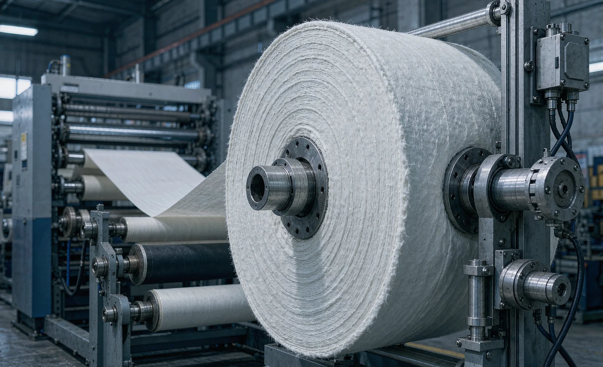
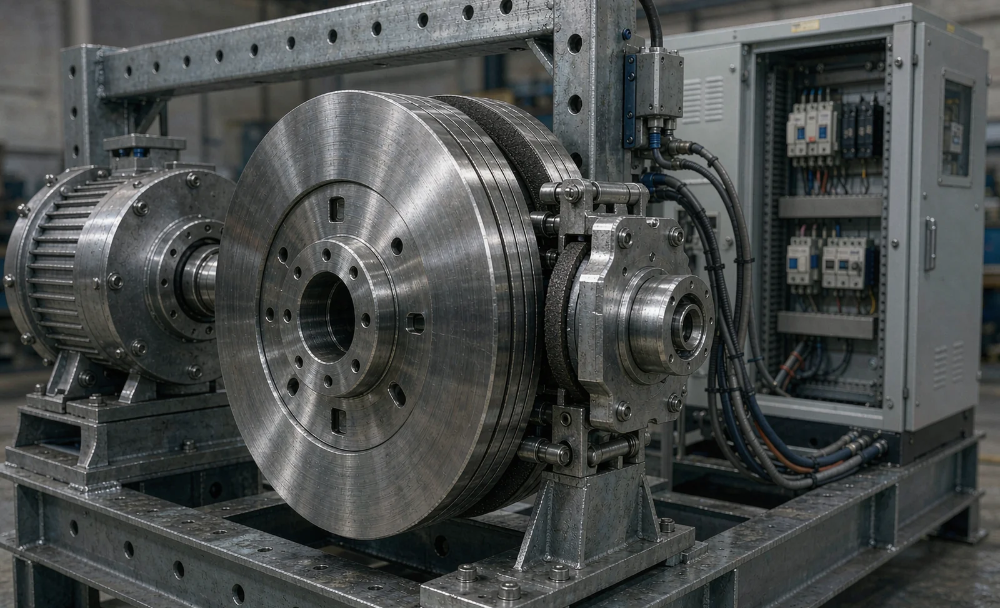

Published October 16, 2026 | By HDPTH Technical Editorial Team

Every tension conversation on a slitter rewinder eventually arrives at the unwind brake. As the parent roll unwinds, its diameter falls and its inertia changes constantly; the brake must remove exactly the right amount of torque at every instant so the web moves at line speed without stretching, wrinkling or snapping. Get the technology wrong and the symptoms appear downstream as tension spikes, telescoped rolls and web breaks that buyers often blame on the tension control system when the real limit is brake sizing. This guide compares the four main unwind brake technologies and shows how to specify the right one.
Why the brake is a tension component, not an accessory
In a braked unwind, tension is literally created by the brake resisting the pull of the traction section. The controller computes a torque reference that falls in proportion to roll diameter — the basis of taper tension profiles — and the brake executes it. That execution has two limits that quotations often blur together. The first is torque capacity: peak torque must exceed roll weight times maximum radius times your tension setpoint, with margin. The second is heat dissipation: all the mechanical brakes convert braking power into heat continuously, and a unit sized correctly for torque can still overheat at full roll diameter and high speed. Ask every supplier for both numbers at your worst-case operating point, not a generic rating.
Pneumatic disc brakes: the robust workhorse
Pneumatic disc brakes multiply clamping force through air pressure acting on friction pads, giving a wide, smoothly proportional torque range from a simple pressure signal. They tolerate heavy rolls, dissipate heat well and fail safe. Their costs are compressed air — a real utility line item, as covered in our compressed air guide — and periodic friction pad replacement. For wide nonwoven, geotextile and film parent rolls, the pneumatic disc brake remains the default choice. Verify the quote includes clean, dry air treatment, because contaminated air degrades control quality.
Magnetic particle brakes: smooth but heat-limited
Magnetic particle brakes transmit torque through magnetized powder between an input and output member. Torque is proportional to excitation current, independent of slip speed, which gives very clean low-torque control — valuable on narrow webs, sensitive materials and laboratory lines. The trade-off is thermal: the particles and their seals limit continuous heat dissipation, and particles wear and need replacement at service intervals. They suit light-to-medium parent rolls and applications where friction dust is unacceptable. If your mix includes both heavy and light rolls, check each against the brake’s thermal curve.
Hysteresis brakes: frictionless and maintenance-free
Hysteresis brakes transmit torque magnetically through a drag cup with no physical contact between rotating parts, so there is nothing to wear and no particle dust. Torque is exceptionally repeatable and independent of speed, which makes them attractive for precision narrow-web work and for pilot lines where repeatability matters more than raw capacity. Their limits are torque range and heat: they are built for light rolls and moderate speeds. For full-width nonwoven parent rolls they are rarely the right answer, but for small-diameter, high-value webs they can eliminate a maintenance category entirely.
Regenerative drive unwinds: when the motor replaces the brake
A driven unwind inverts the architecture: an AC or servo motor controls the unwind shaft in all four quadrants, and the drive returns braking energy to the supply. The result is the highest tension accuracy, no friction consumables and full torque data for the condition monitoring system. Costs are a larger drive cabinet and higher upfront price. The braked versus driven unwind comparison covers the architectural decision in depth; high-speed lines, wide webs and tension-critical products justify the drive, while moderate-speed lines with forgiving materials get the same result from a well-sized pneumatic brake.

Unwind brake selection checklist for buyers
| Check | What it proves | When to do it |
|---|---|---|
| Torque sizing at heaviest roll, max diameter | No order exceeds the brake’s torque capacity | Before quotation |
| Continuous heat dissipation at full roll, full speed | The brake survives your worst duty cycle | Quotation review |
| Tension accuracy across the diameter range | Roll quality holds from full core to empty | Material trial |
| Utility provisions (air quality or drive power) | Installation matches the technology chosen | Site preparation |
| Consumables and service intervals documented | Running cost is known, not discovered | FAT and contract |
Run the heaviest parent roll at top speed during the material trial, and record actual tension variation from full roll down to core. A brake that holds tension at half roll but hunts at full roll will surface as winding defects weeks after commissioning. For upgrades of existing lines, weigh a brake swap against a driven-unwind retrofit using the retrofit versus new framework, and confirm the tension zone architecture supports the change before ordering hardware.
Specifying a slitter rewinder unwind?
Send HDPTH your parent roll weights, widths, core sizes and line speed. We will size the unwind brake technology — pneumatic, magnetic particle, hysteresis or regenerative drive — against your heaviest roll and worst duty cycle, and validate tension stability across the full diameter range at the material trial.
Submit Your Project InquiryFrequently asked questions
Which unwind brake technology is best for nonwoven slitting?
Most nonwoven slitter rewinders use pneumatic disc brakes for their wide torque range and heat capacity, with magnetic particle brakes common on narrower or lower-inertia lines. The right choice depends on parent roll weight, web tension window and line speed, so size the brake against your heaviest realistic roll rather than a brochure example.
How do I size unwind brake torque and heat dissipation?
Calculate torque from the maximum roll diameter multiplied by the target web tension, then verify continuous heat dissipation at your worst-case operating point — typically full roll at high speed. A brake can be correctly sized for torque yet fail thermally if it cannot shed the watts it converts to heat at full diameter.
Do I still need a brake if the unwind is motor driven?
A driven unwind with a regenerative AC or servo drive replaces the friction brake and feeds braking energy back to the line supply. It offers the best tension accuracy and lowest maintenance, but costs more upfront and only pays off on high-speed lines, wide webs or applications where tension accuracy directly affects product quality.
Can an existing slitter rewinder be retrofitted with a different brake type?
Yes, in most cases. Swapping a pneumatic disc brake for a magnetic particle unit, or adding a driven unwind, is a well-established retrofit provided the frame, shaft size and cooling provisions match. Review expected tension performance gains against the cost, because a retrofit makes sense when the current brake limits speed or tension quality.
What maintenance does each unwind brake type need?
Pneumatic disc brakes need periodic friction pad replacement and clean, dry air. Magnetic particle brakes need particle replacement at service intervals and stable excitation current. Hysteresis brakes are essentially maintenance free because there is no contact between moving parts. Regenerative drive unwinds need only standard motor and drive service.